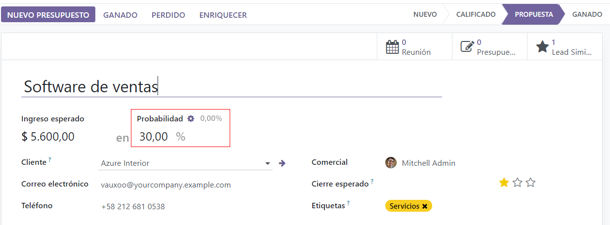
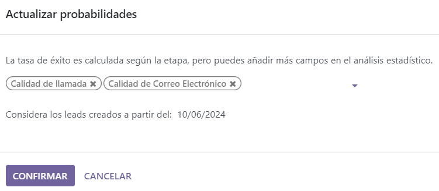
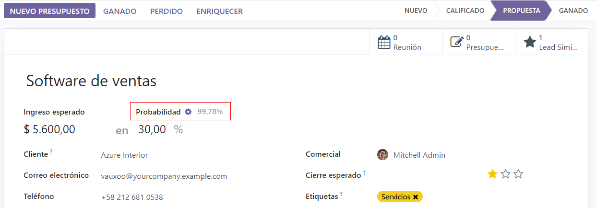
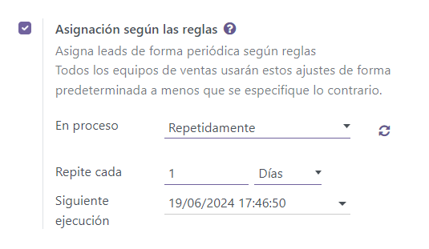

Assign leads with predictive lead scoring¶
The Odoo CRM app can automatically assign leads/opportunities to sales teams and salespeople. A standard practice is to assign leads based on the probability of winning each lead. Companies can prioritize the leads that are more likely to result in successful deals by quickly assigning them to the appropriate salespeople.
Odoo automatically calculates the probability of winning each lead using a method called predictive lead scoring.
Predictive lead scoring¶
Predictive lead scoring is a machine-learning model that uses historical data from Odoo CRM to score open leads/opportunities.
As a company processes opportunities through the CRM pipeline, Odoo collects data on which opportunities are won and lost. Predictive lead scoring uses this data to predict the probability of winning each new lead or opportunity.
The more opportunities that are sent through the CRM pipeline, the more data Odoo collects, resulting in more accurate probabilities.
Specifically, Odoo’s predictive lead scoring uses the naive Bayes probability model:
The probability of success of each opportunity is displayed on the opportunity form, and it updates automatically as the opportunity progresses through the CRM pipeline.
When an opportunity moves to the next stage, its probability of success automatically increases according to the predictive lead scoring algorithm.
Configuration¶
Predictive lead scoring is always active in Odoo CRM. However, the variables used to calculate the probability of success can be customized in the settings.
To customize the variables used by predictive lead scoring, go to . Under Predictive Lead Scoring, click on the Update Probabilities button.
Then, click on the drop-down menu to choose which variables the predictive lead scoring feature will take into account.
Any number of the following variables can be activated:
State: the geographical state from which the opportunity originates
Country: the geographical country from which the opportunity originates
Phone Quality: whether or not a phone number is listed for the opportunity
Email Quality: whether or not an email address is listed for the opportunity
Source: the source of an opportunity (e.g. search engine, social media)
Language: the spoken language specified on the opportunity
Tags: the tags placed on the opportunity
Note
The variables Stage and Team are always in effect. Stage refers to the CRM pipeline stage
that an opportunity is in. Team refers to the sales team that is assigned to an opportunity.
Predictive lead scoring always takes into account these two variables, regardless of which
optional variables are selected.
Next, click on the date field next to the option Consider leads created as of the: to select the date from which predictive lead scoring will begin its calculations.
Lastly, click Confirm to save changes.
Change the probability manually¶
An opportunity’s probability of success can be changed manually on the opportunity form. Click on the probability number to edit it.
Important
Manually changing the probability removes the automatic probability updates for that opportunity. The probability will no longer update automatically as the opportunity moves through each stage of the pipeline.
To reactivate automatic probability, click on the gear icon next to the probability percentage.
Assign leads based on probability¶
Odoo CRM can assign leads/opportunities to sales teams and salespeople based on specified rules. Create assignment rules based on the leads’ probability of success to prioritize those that are more likely to result in deals.
Configure rule-based assignment¶
To activate rule-based assignment, navigate to , and activate Rule-Based Assignment.
The rule-based assignment feature can be set to run Manually, meaning an Odoo user must manually trigger the assignment, or Repeatedly, meaning Odoo will automatically trigger the assignment according to the chosen time period.
To set up automatic lead assignment, select Repeatedly for the Running section. Then, customize how often Odoo will trigger the automatic assignment in the Repeat every section.
If rule-based assignment is set to run Repeatedly, the assignment can still be triggered manually using the circular arrow icon in the Rule-Based Assignment settings (or using the Assign Leads button on the sales team configuration page).
Configure assignment rules¶
Next, configure the assignment rules for each sales team and/or salesperson. These rules determine which leads Odoo assigns to which people. To get started, navigate to , and select a sales team.
On the sales team configuration form, under Assignment Rules, click on Edit Domain to configure the rules that Odoo uses to determine lead assignment for this sales team. The rules can include anything that may be relevant for this company or team, and any number of rules can be added.
Click Add Filter to start creating assignment rules. Click on the + sign on the right of the assignment rule to add another line. Click on the x symbol to remove the line.
To create an assignment rule based on an opportunity’s probability of success, click on the far left drop-down menu of an assignment rule line, and select Probability.
From the middle drop-down menu, select the desired equation symbol—most likely the symbol for greater than, less than, greater than or equal to, or less than or equal to.
In the far right space, enter the desired number value of the probability. Finally, click Save to save changes.
Example
To configure an assignment rule such that a sales team receives leads that have a probability of
success of 20% or greater, create a Domain line that reads: Probability >= 20.
Separate assignment rules can also be configured for individual team members. From the sales team configuration page, click on a team member in the Members tab, then edit the Domain section. Click Save to save changes.
If automatic lead assignment is configured in the settings, both the sales team and individual team members have the option to Skip auto assignment. Check this box to omit a particular sales team or salesperson from being assigned leads automatically by Odoo’s rule-based assignment feature. If Skip auto assignment is activated, the sales team or salesperson can still be assigned leads manually.
To manually assign leads to this sales team, click on the Assign Leads button at the top of the sales team configuration page. This will assign any leads that are currently unassigned and match this team’s specified domain.